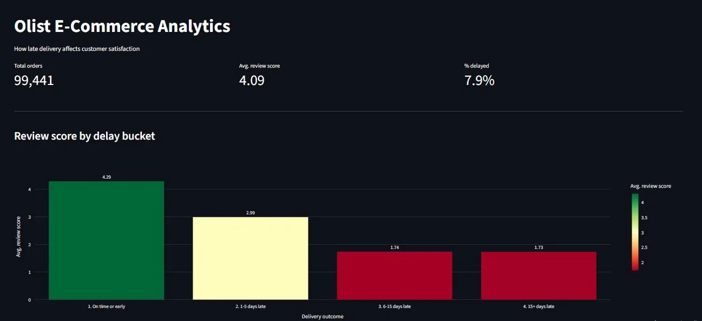

Olist e-commerce analytics
A tested dbt star schema over 100,000 orders and a Power BI report that measure how much late deliveries hurt reviews.
CodeLive demoPower BI file (.pbix)
4.29 → 1.81average review on time vs. 6 days late; after that it barely moves

- Decision it supports
- Where to invest in logistics: which delays still recover rating with each day saved.
- Who uses it
- Marketplace operations, logistics and customer experience.
- What an error costs
- Investing in the wrong problem spends money without recovering ratings.
- How it creates value
- The rating falls with every day late until about the sixth (from 4.29 on time to 1.81) and then barely moves, so logistics money pays off in the first week of a delay. The numbers come from dbt models checked by 48 tests and are in the Power BI report.
- Risks and limits
- Correlation in observational data: late orders may differ in other ways.
Problem
A marketplace knows late deliveries hurt reviews, but not how much, how quickly, or whether to reduce the size of delays or prevent them altogether.
Solution
A star schema built with dbt on DuckDB over about 100,000 real Olist orders, with tests for every business rule, a three-page Power BI report on top of it and a Streamlit dashboard.
How it works
- 15 dbt models and 48 tests run on every change, from the raw files.
- The two fact tables are incremental. CI replays the order feed day by day from the event times in the data and proves they equal a full rebuild at every step; source freshness fails a load over 50 hours old.
- The Power BI model (TMDL) and pages (PBIR) are generated as code: 23 DAX measures, a marked date table, and page texts computed from the data. CI fails if they drift from the committed files.
- The report was opened, refreshed and checked in Power BI Desktop; the .pbix is in the repository.
Results
| 6.8% | of delivered orders arrive late |
| 3.73 → 2.68 | average review 1 day late vs. 3 days late: each day in the first week costs rating |
| 48 | dbt tests on 15 models |
Limits
Correlation from observational data; late orders may differ in other ways.
Stack
dbt, DuckDB, Power BI, DAX, Streamlit